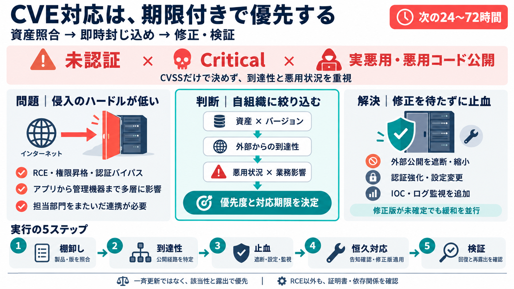

NVD-CVE-2026-33824
#### CVE CISA KEV Update by Cybersecurity and Infrastructure Security Agency (CISA) U.S. Civilian Government Aug 18, 202…

#### CVE CISA KEV Update by Cybersecurity and Infrastructure Security Agency (CISA) U.S. Civilian Government Aug 18, 202…
NVD MENU ## Information Technology Laboratory # National Vulnerability Database # National Vulnerability Database # …
#### CVE CISA KEV Update by Cybersecurity and Infrastructure Security Agency (CISA) U.S. Civilian Government Jul 14, 202…
#### CVE CISA KEV Update by Cybersecurity and Infrastructure Security Agency (CISA) U.S. Civilian Government 7/21/2026 1…
#### CVE CISA KEV Update by Cybersecurity and Infrastructure Security Agency (CISA) U.S. Civilian Government 2/10/2026 9…